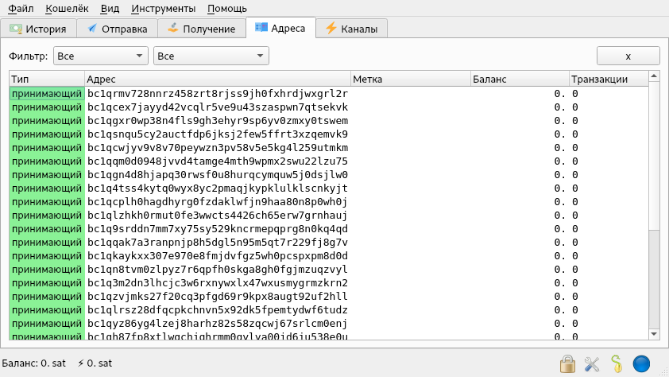

Здесь выбираем "Стандартный кошелёк".
Кто может стать Гарантом.
Гарантом может стать человек, который в Беларуси пользуется уважением, при этом имеет значимое собственное имя, в идеале у этого человека должен быть выход на медийные площадки, где он сможет заявить о себе, и о своём решении стать Гарантом.
В идеале, все понимают, что чем более уважаемый человек, тем надёжнее доверять ему Фонд.
Чем человек известнее, и чем большей аудиторией владеет - тем быстрее Фонд станет известным.
Поэтому, возможно мы реализуем следующий подход. Но это пока не точно.
В общем, если заходит Гарант более известный и уважаемый, то первый зашедший Гарант передаёт ему средства и выходит.
Это всё для продвижения и надёжности Фонда.
Гарант - не один, их будет как минимум трое. А может быть, и другое число. Пока - трое. Остальное решим по ходу дела. При этом у каждого Гаранта будет свой независимый счёт.
Что ещё должен уметь делать гарант.
Ему нужны базовые навыки обращения с компьютером. Нужно уметь устанавливать приложения. Фактически, всего два. В случае, если что-то не работает - либо разобраться самостоятельно, либо связаться с нашей тех.поддержкой, и тоже после этого суметь разобраться.
Для работы понадобится несколько флэш карт. Их нужно подготовить заранее.
Последовательность действий Гаранта. Что нужно сделать, если вы решили таковым быть.
Это всё без нас можно сделать. Хотя предварительно можно и связаться с нами.
1) Необходимо открыть и создать счёт.
2) Сохранить ключ от счёта в достаточной безопасности.
3) Записать видео-сообщение, в котором вы объявляете, что вы желаете стать Гарантом, и несёте всю личную ответственность, перед Беларусью и всем Народом Беларуси, а также перед своим Родом - за сохранность этого счёта. И что будете распоряжаться им строго по регламенту Фонда. В случае возникновения непонятных ситуаций будете согласовываться с Народом, и ожидать всеобщего решения.
4) Видео-сообщение выложить в открытый доступ. На ютуб, или на аналогичный сайт. Либо на свой канал. Либо на любой народный. Например, на Радио97.
5) Администраторам фонда, на почту slav.rev7@gmail.com необходимо будет прислать открытый(!) ключ. Его можно присылать. Чтобы все смогли просматривать счёт, и его состояние.
6) Как только это всё выполняется. Мы рассматриваем всё это, в кратчайшие сроки. 1-2 дня, скорее всего. Если никаких против - нет. И если Гарант действительно известный и уважаемый человек - мы добавляем вас без вопросов.
7) Когда сумма будет собрана, Гарант должен будет достать ключ и перевести выбранную сумму на указанный счёт.
Коротко, это всё.
Ничего сложного в принципе - нет. Самое важное здесь - это именно Ответственность.
И ответственность эта немала. Поэтому Гарант также получит за ответственность, и взятые на себя обязательства - вознаграждение за свой труд, в виде процента от в целом (на всех счетах) собранной суммы.
Теперь пойдём по шагам, что нужно сделать.
Для начала необходимо создать счёт/кошелёк.
Для этого нам понадобятся 2 программы.
1) Браузер Tor. Он нужен, чтобы обеспечить вашу анонимность в сети биткоин.
2) Биткоин-кошелёк Electrum. Берём, обязательно, именно его для надёжности. Это может быть важно для публичного просмотра счёта. В общем, в рамках этого фонда используем Electrum.
У обоих приложений открытый исходный код. Используем 2 самых популярных приложения.
Tor мы скачиваем отсюда
https://www.torproject.org/download/
Electrum - отсюда
https://electrum.org/#download
Например, вот так
https://download.electrum.org/4.1.2/electrum-4.1.2-setup.exe
Устанавливаем и то, и другое.
Запускаем Tor. Обязательно. Желательно открыть пару страниц и убедиться, что он работает, и страницы открываются.
Теперь запускаем Electrum.
И идём по шагам.
При первом запуске Electrum необходимо выбрать
Use Tor proxy at port 9150
Вам будет предложено создать кошелёк. Название указываем - любое. fund_wallet - неплохой вариант.
Здесь выбираем "Стандартный кошелёк".

Здесь - "Создать новую seed-фразу".
Здесь можно понажимать "Далее" и "Отмена", пока не сгенерируется фраза, которая вам понравится.

Seed-фраза - это по сути и есть Секретный Ключ! Ключ от счёта!
Сохранность именно фразы вы и Гарантируете!
Её нельзя никому передавать. Её нельзя передавать через почту/телеграм/что-то ещё. Вообще никак нельзя передавать, т.к. это черевато получением доступа к фонду! Её даже на жёском диске компьютера нельзя сохранять! Т.к. ваш компьютер может быть просканирован! Если вы потеряете ключ, его никто не сможет восстановить НИКАК! И вы потеряете все деньги, совсем!
Поэтому здесь мы поступаем так.
Мы достаём флэш-карту. И сохраняем эту фразу в обычный текстовый файл. Убеждаемся, что он читается и открывается.
Дублируем это ещё на несколько флэш-карт. На всякий случай, вдруг с первой что-либо произойдёт.
Записать на бумагу - тоже можно. Если бумага будет храниться в безопасности.
А дальше - в принципе - это ваше личное дело, как вы их будете сохранять.
Собственно в этом и есть задача Гаранта.
Я бы предложил, на нескольких флэш-картах, запаролировать, нпр. файл через zip-архив. Где паролем будет ваша дата рождения. Но можно, в принципе и без этого.
Одну флэш-карту я бы предложил закопать аккуратно под деревом. Другую спрятать в неизвестном месте, в погребе, чулане, где-то ещё.
Третью, например - носить постоянно при себе. И в случае форс-мажора - сломать/уничтожить. Имея доступ к оставшимся другим, о расположении которых знаете - только вы.
Продумайте внимательно, и последовательно, как и где вы будете сохранять Секретный Ключ!
Фраза выше - это не моя фраза, этот кошелёк я не использую.
Вводим/вставляем фразу ещё раз.

Вводим пароль для шифрования кошелька.
Выбираем, например, свою дату рождения.
Это тоже важный момент.
Дело в том, что приложение Electrum при работе хранит кошелёк на жёстком диске. И seed-фраза там хранится в открытом виде. А значит, может быть украдена, например, шпионской программой. Или айтишником, который получит доступ к вашему компьютеру.
Поэтому необходимо зашифровать файл этого кошелька. Для этого вводим пароль.
Потерять этот пароль - не страшно. Он - только для работы и шифрации. Если вы его потеряете, то кошелёк вы сможете восстановить из seed-фразы без проблем. Но. Каждый раз, когда вы будете работать с кошельком, вам необходимо будет его паролировать/вводить пароль. Это важно.
Вводим пароль, нажимаем "Далее".
Поздравляю! Ваш счёт создан, и зарегистрирован в сети биткоин!
Внизу указан баланс.
В истории - пока ничего нет.
"Отправка" - через эту вкладку вы будете отправлять деньги со счёта.
"Адреса" - это список реальных адресов вашего кошелька, "точек", которые указываются для перевода на счёт фонда. Нам достаточно будет первой из списка. И её увидит администратор - позже, и опубликует на сайте. Показывать их - можно.
Здесь мы поступаем так.

Копируем адрес, первой строчки
В принципе, можно любой из них выбрать, который вам больше всего понравится.
Если устраивает первый, копируем первый.
И вставляем в текст письма администраторам.
Далее нам теперь нужно сделать следующее.
Заходим в
Кошелёк->Информация

Здесь мы видим "Публичный мастер-ключ"
Вот он нас интересует.
Этот ключ, вы тоже отправите - администраторам. Его можно отправлять! Он публичный! Тот у кого есть этот ключ, он сможет просматривать ваш счёт, ваши переводы, но снимать деньги НЕ сможет. Снять можно только имея seed-фразу (секретный ключ). А она - есть только у вас.
Итак, мы копируем этот ключ, и отправляем его администраторам. На почту slav.rev7@gmail.com в тексте письма с темой "Гарант фонда", или похожей. Где указываете также - кто вы.
То есть, в письме вы указываете следующее:
1) Кто вы.
2) Публичный мастер-ключ (начинается с zpub)
3) Адрес кошелька, что скопировали (начинается обычно с bc1)
И здесь давайте поступим аккуратно и перестрахуемся.
Всё дело в том, что именно этот ключ содержит адрес/адреса! Куда люди будут присылать деньги! Поэтому если нам кто-то пришлёт "левый ключ" под вашим именем, то сможет получить часть денег.
Поэтому будем делать так.
Вы сами публикуете
1) Публичный мастер ключ (начинается с zpub)
2) Адрес (начинается обычно с bc1)
Прямо на своём публичном ресурсе, на вашем сайте, также под видео, в котором вы заявляете, что вы будете Гарантом.
То есть, вы прямо на своём ресурсе всё это публикуете! Чтобы было видно, что это идёт от вас.
Ссылку на ресурс/видео тоже присылаете нам! Чтобы мы её у себя разместили для обратной проверки.
После того, как мы получим ваш публичный ключ и адрес. Мы публикуем их на сайте, а также на Беларуском Демократическом Форуме, вместе с адресом, рядом с вашим именем. И даём обратные ссылки на ваши ресурсы.
И таким образом, получается, что ключ и адрес, есть и на вашем ресурсе, и на нашем сайте.
И таким образом, любой сможет соотнести это, и удостовериться, что данные одинаковые.
Это делается для того, чтобы администраторы не смогли ничего подменить.
То есть, если вдруг они это сделают. То любой человек сможет открыть по ссылке ваш ресурс, и сверить адреса/реквизиты. И принять соответствующие меры.
Записываете видео-обращение.
Отправляете письмо.
Публикуете открытый ключ и адрес.
Мы это всё получаем. Если успешно, объявляем вас принятым Гарантом. Например, с Радио97 мы уже договорились, скорее всего на Радио97 объявляем. Добавляем вас на сайт в список Гарантов. Вам сообщаем на почту.
После этого вы можете закрыть кошелёк Electrum, на всякий случай.
И вообще можно его удалить с компьютера. И создать снова, только когда необходимо будет сделать перевод.
Да, это интересный момент. Вам не нужно постоянно держать кошелёк запущенным. Принимать он будет без вашего участия.
А вот отправить с него - сможете - только вы, только когда откроете.
Можно ещё будет закрыть/удалить этот кошелёк. Но при этом создать кошелёк только для мониторинга. Как это сделать - можно прочитать в разделе для вкладчиков.
В общем, при создании кошёлька вам нужно будет выбрать не seed-фразу, а "Публичный мастер-ключ" - и ввести далее именно его. В результате вы получите кошелёк только для просмотра.
В принципе это вся инструкция для Гарантов.
Непредвиденные обстоятельства.
В случае непредвиденных обстоятельств, или в непонятных ситуациях, вы, как Гарант, обращаетесь к админстраторам.
Контакты указаны на главной странице.
Либо можете обратиться к другим Гарантам.
Форс-мажор. Какой может быть форс-мажор.
Вы, как Гарант, не несёте ответственности совсем при совсем уж форс-мажорных обстоятельтсвах, таких как.. что может быть.
1) Сменилось измерение планеты, и перестала работать вся техника.
2) По всему миру упала навсегда сеть биткоина.
3) Тотально перестало работать электричество по всей планете.
Думаю в ближайшие 2-3 месяца этого не произойдёт.
Если вдруг это произошло, то с вас, как с Гаранта - вся ответственность снимается.
Во всех остальных случаях, вам как Гаранту следует выйти на администраторов, других Гарантов, и сообщить о том, что произошло и происходит.
Также как Гарант, вы можете перевести самостоятельно средства со счёта, в принципе - только в одном случае. Вам угрожает реальная опасность, и вы более не можете быть Гарантом, либо если кто-то заполучил ваш закрытый ключ (seed-фразу).
Тогда ваша задача: как можно быстрее выйти в интернет, открыть кошелёк, и перевести все имеющиеся у вас средства - на кошелёк любого из Гарантов! И сообщить об этом администраторам, разумеется.
И ещё, как Гаранту, вам желательно на время работы Фонда - оставаться на связи. Чтобы мы знали, что с вами всё в порядке.
В целом, это вся инструкция для Гарантов.